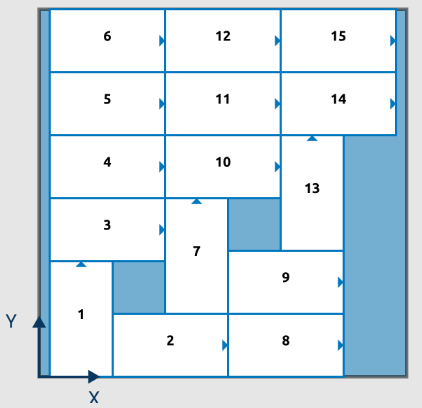
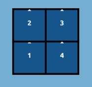

Block: All boxes are oriented the same way.
Block: All boxes are oriented the same way.
The layer editor allows you to define how boxes are arranged on a single layer of your pallet.
This interactible canvas shows a rectangular area representing your selected pallet. Your box product is represented by rectangles with your assigned labels and a number inside. The number on the box indicates its placement order for a layer. When programming your robot to construct your layer, you will be teaching the location of box 1. PalletBuilder will automatically determine the next box position with respect to box 1 of the designed layer and adjust the path accordingly.
PalletBuilder offers three modes (BUILD, SNAP and GROUP) which can be accessed with there respective buttons. The PREDEFINED LAYER button enters a mode where PalletBuilder will suggest layers to the user. Finally, the SEQUENCE button allows you to define the order in which the boxes of your layer will be placed.
The PREDEFINED LAYER button will bring up a preview screen where PalletBuilder will suggest standard layer types. PalletBuilder has four distinct layer types that can be selected using the dropdown menu. Each layer type has options to adjust the suggested layers.
Block: All boxes are oriented the same way.
 Interlock: A row or column of boxes has a different orientation from the other boxes.
Interlock: A row or column of boxes has a different orientation from the other boxes.
 Pinwheel: A symmetrical layer with sections of alternating box orientations.
Pinwheel: A symmetrical layer with sections of alternating box orientations.
 Diagonal: Boxes with a common orientation are aligned diagonally.
Accepting the layer will apply the suggested layer. Cancelling will restore your layer design prior to entering the predefined layer mode.
The SEQUENCE button allows you to overwrite the order in which the boxes are placed. When clicked, all the boxes will no longer have numbers in them. Two options are available to sequence your layer. The Automatic mode requires you to choose a corner of the pallet and a direction with respect to that corner. PalletBuilder will suggest a sequence for your layer based on your choices. Alternatively, when using the manual mode, you can click the boxes in the order you want them placed.
The canvas display can be manipulated using the four buttons at the top right corner of the screen.
Lastly, PalletBuilder provides global transformations that can be applied to a layer.
BUILD: This is the default construction mode for a layer. When a box is pressed, four circular "+" buttons will appear on the selected box. Pressing away from the box will deselect it. Clicking on a "+" button will add a box in the selected direction. An additional button at the top can be pressed for quick rotations of boxes.

While a box is selected, the bottom section will show the position and orientation of the box with respect to the pallet's coordinate system. The arrow buttons can be used to perform stepwise translations or rotations of the selected box. Alternatively, the position of the box can be set by editing its X and Y fields.
GROUP: The group mode allows you to select multiple boxes to translate them or rotate them together as a unit. Press on a box to include or exclude it from the selection. You can also delete multiple boxes at once with this mode. Pressing on the SELECT ALL button will automatically enable group mode with all boxes selected. Deleting all boxes will reset the layer editor.

SNAP: In the snap mode, users can move boxes together for quick translations. Touching on a box will display eight circular snap points. Users can then select a snap point on the source box to be associated with the snapping action. Next, users must select a destination box and a corresponding snap point. Once two distinct snap points are selected, the source box will be translated to the destination box so that the two selected snap points are joined.

Notes: